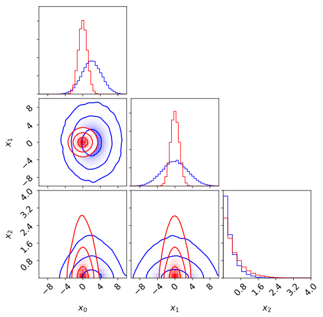
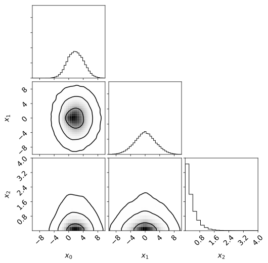
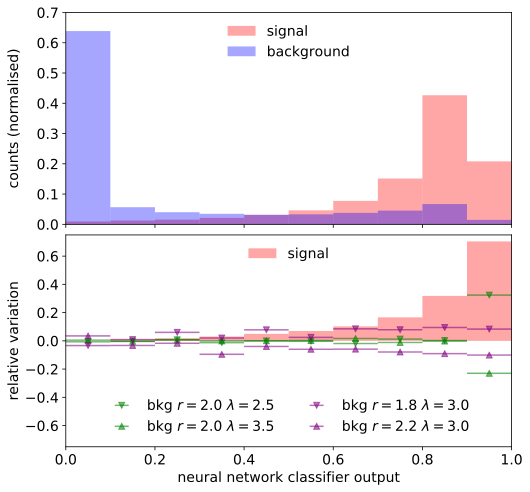
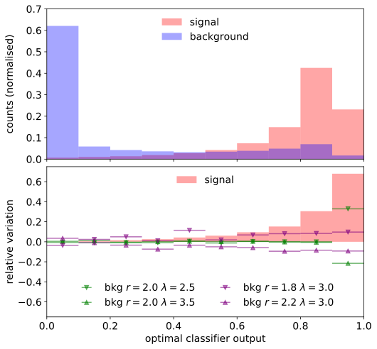
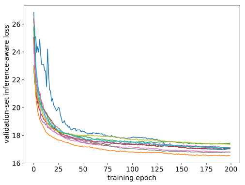
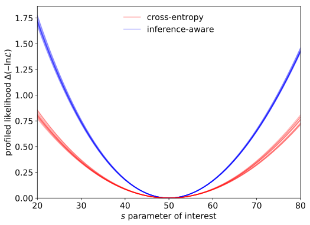
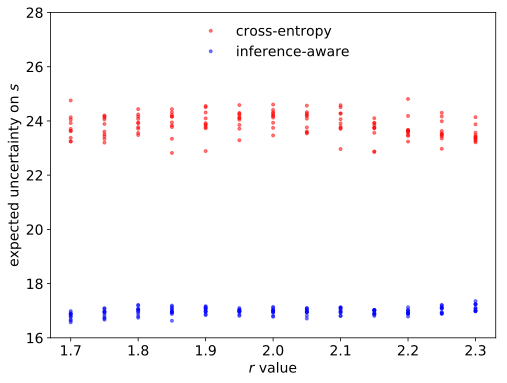
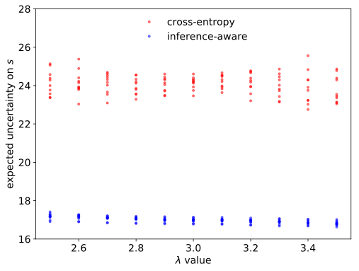

6.5 Experiments
In this section, we first study the effectiveness of the inference-aware optimisation in a synthetic mixture problem where the likelihood is known. We then compare our results with those obtained by standard classification-based summary statistics. All the code needed to reproduce the results presented here is available in an online repository [201], extensively using TensorFlow [129] and TensorFlow Probability [192], [202] software libraries.
6.5.1 3D Synthetic Mixture
In order to exemplify the usage of the proposed approach, evaluate its viability and test its performance by comparing to the use of a classification model proxy, a three-dimensional mixture example with two components is considered. One component will be referred as background \(f_b(\boldsymbol{x} | \lambda)\) and the other as signal \(f_s(\boldsymbol{x})\); their probability density functions are taken to correspond respectively to: \[ f_b(\boldsymbol{x} | r, \lambda) = \mathcal{N} \left ( (x_0, x_1) \, \middle | \, (2+r, 0), \begin{bmatrix} 5 & 0 \\ 0 & 9 \\ \end{bmatrix} \right) Exp (x_2 | \lambda) \qquad(6.13)\] \[ f_s(\boldsymbol{x}) = \mathcal{N} \left ( (x_0, x_1) \, \middle | \, (1,1), \begin{bmatrix} 1 & 0 \\ 0 & 1 \\ \end{bmatrix} \right) Exp (x_2 | 2) \qquad(6.14)\] so that \((x_0,x_1)\) are distributed according to a multivariate normal distribution while \(x_2\) follows an independent exponential distribution both for background and signal, as shown in Fig. 6.2 (a). The signal distribution is fully specified while the background distribution depends on \(r\), a parameter which shifts the mean of the background density, and a parameter \(\lambda\) which specifies the exponential rate in the third dimension. These parameters will be the treated as nuisance parameters when benchmarking different methods. Hence, the probability density function of observations has the following mixture structure: \[ p(\boldsymbol{x}| \mu, r, \lambda) = (1-\mu) f_b(\boldsymbol{x} | r, \lambda) + \mu f_s(\boldsymbol{x}) \qquad(6.15)\] where \(\mu\) is the parameter corresponding to the mixture weight for the signal and consequently \((1-\mu)\) is the mixture weight for the background. The low-dimensional projections from samples from the mixture distribution for a small \(\mu=50/1050\) is shown in Fig. 6.2 (b).

Figure 6.2: Projection in 1D and 2D dimensions of 50000 samples from the synthetic problem considered. The background distribution nuisance parameters used for generating data correspond to \(r=0\) and \(\lambda=3\). For samples the mixture distribution, \(s=50\) and \(b=1000\) were used, hence the mixture coefficient is \(\mu=50/1050\).. a — signal (red) and background (blue), b — mixture distribution (black)
Let us assume that we want to carry out inference based on \(n\) i.i.d. observations, such that \(\mathbb{E}[n_s]=\mu n\) observations of signal and \(\mathbb{E}[n_b] = (1-\mu)n\) observations of background are expected, respectively. While the mixture model parametrisation shown in Eq. 6.15 is correct as is, the underlying model could also give information on the expected number of observations as a function of the model parameters. In this toy problem, we consider a case where the underlying model predicts that the total number of observations are Poisson distributed with a mean \(s+b\), where \(s\) and \(b\) are the expected number of signal and background observations. Thus the following parametrisation will be more convenient for building sample-based likelihoods: \[ p(\boldsymbol{x}| s, r, \lambda, b) = \frac{b}{ s+b} f_b(\boldsymbol{x} | r, \lambda) + \frac{s}{s+b} f_s(\boldsymbol{x}). \qquad(6.16)\] The parametrisation of Equation 6.16 is common for physics analyses at the LHC, because theoretical calculations provide information about the expected number of observations. If the probability density is known, but the expectation for the number of observed events depends on the model parameters, the likelihood can be extended [203] with a Poisson count term as: \[ \mathcal{L}(s, r, \lambda, b) = \textrm{Pois}(n | s+b) \prod^{n} p(\boldsymbol{x}| s,r, \lambda, b) \qquad(6.17)\] which will be used to provide an optimal inference baseline when benchmarking the different approaches. Another quantity of relevance is the conditional density ratio, which would correspond to the optimal classifier (in the Bayes risk sense) separating signal and background events in a balanced dataset (equal priors): \[ s^{*}(\boldsymbol{x} | r, \lambda) = \frac{f_s(\boldsymbol{x})}{f_s(\boldsymbol{x}) + f_b(\boldsymbol{x} | r, \lambda) } \qquad(6.18)\] noting that this quantity depends on the parameters that define the background distribution \(r\) and \(\lambda\), but not on \(s\) or \(b\) that are a function of the mixture coefficients. It can be proven (see Section 4.3.1.2 ) that \(s^{*}(\boldsymbol{x})\) is a sufficient summary statistic with respect to an arbitrary two-component mixture model if the only unknown parameter is the signal mixture fraction \(\mu\) (or alternatively \(s\) in the chosen parametrisation). In practice, the probability density functions of signal and background are not known analytically, and only forward samples are available through simulation, so alternative approaches are required.
The synthetic nature of this example allows to rapidly generate training data on demand, yet a training dataset of only 200,000 simulated observations has been considered, in order to study how the proposed method performs when training data is limited. Half of the simulated observations correspond to the signal component and half to the background component. The latter has been generated using \(r=0.0\) and \(\lambda=3.0\). A validation holdout from the training dataset of 200,000 observations is used exclusively for computing relevant metrics during training and to control over-fitting. The final figures of merit that allow to compare different approaches are computed using a larger dataset of 1,000,000 observations. For simplicity, mini-batches for each training step are balanced so the same number of events from each component is taken both when using standard classification or inference-aware losses.
A common treatment of this problem in high-energy physics consist of posing the problem as one of classification based on a simulated dataset, as discussed in Section 4.3.1. A supervised machine learning model such a neural network can be trained to discriminate signal and background observations, considering a fixed parameters \(r\) and \(\lambda\). The output of such a model typically consist in class probabilities \(c_s\) and \(c_b\) given an observation \(\boldsymbol{x}\), which will tend asymptotically to the optimal classifier from Eq. 6.18 given enough data, a flexible enough model and a powerful learning rule. The conditional class probabilities (or alternatively the likelihood ratio \(f_s(\boldsymbol{x})/f_b(\boldsymbol{x})\)) are powerful learned features that can be used as summary statistic; however their construction ignores the effect of the nuisance parameters \(r\) and \(\lambda\) on the background distribution. Furthermore, some kind of non-parametric density estimation (e.g. a histogram) has to be considered in order to build a calibrated statistical model using the classification-based learned features, which will in turn smooth and reduce the information available for inference.
To exemplify the use of this family of classification-based summary statistics, a histogram of a deep neural network classifier output trained on simulated data and its variation computed for different values of \(r\) and \(\lambda\) are shown in Fig. 6.3 (a). The details of the training procedure will be provided later in this document. The classifier output can be directly compared with \(s(\boldsymbol{x} | r = 0.0, \lambda = 3.0)\) evaluated using the analytical distribution function of signal and background according to Eq. 6.18, which is shown in Fig. 6.3 (b) and corresponds to the optimal classifier. The trained classifier approximates very well the optimal classifier. The summary statistic distribution for background depends considerably on the value of the nuisance parameters both for the trained and the optimal classifier, which will in turn cause an important degradation on the subsequent statistical inference.

Figure 6.3: Histograms of summary statistics for signal and background (top) and variation for different values of nuisance parameters compared with the expected signal relative to the nominal background magniture (bottom). The classifier was trained using signal and background samples generated for \(r = 0.0\) and \(\lambda = 3.0\).. a — classifier trained on simulated samples, b — optimal classifier \(s(\boldsymbol{x} | r = 0.0, \lambda = 3.0)\)
The statistical model described above has up to four unknown parameters: the expected number of signal observations \(s\), the background mean shift \(r\), the background exponential rate in the third dimension \(\lambda\), and the expected number of background observations. The effect of the expected number of signal and background observations \(s\) and \(b\) can be easily included in the computation graph by weighting the signal and background observations. This is equivalent to scaling the resulting vector of Poisson counts (or its differentiable approximation) if a non-parametric counting model as the one described in Sec. 6.3 is used. Instead the effect of \(r\) and \(\lambda\), both nuisance parameters that will define the background distribution, is more easily modelled as a transformation of the input data \(\boldsymbol{x}\). In particular, \(r\) is a nuisance parameter that causes a shift on the background along the first dimension and its effect may be accounted for in the computation graph by simply adding \((r,0.0,0.0)\) to each observation in the mini-batch generated from the background distribution. Similarly, the effect of \(\lambda\) can be modelled by multiplying \(x_2\) by the ratio between the \(\lambda_0\) used for generation and the one being modelled. These transformations are specific for this example, but alternative transformations depending on parameters could also be accounted for as long as they are differentiable or substituted by a differentiable approximation.
For this problem, we are interested in carrying out statistical inference on the parameter of interest \(s\). In fact, the performance of inference-aware optimisation as described in Sec. 6.3 will be compared with classification-based summary statistics for a series of inference benchmarks based on the synthetic problem described above that vary in the number of nuisance parameters considered and their constraints:
- Benchmark 0: no nuisance parameters are considered, both signal and background distributions are taken as fully specified (\(r=0.0\), \(\lambda=3.0\) and \(b=1000.\)).
- Benchmark 1: \(r\) is considered as an unconstrained nuisance parameter, while \(\lambda=3.0\) and \(b=1000\) are fixed.
- Benchmark 2: \(r\) and \(\lambda\) are considered as unconstrained nuisance parameters, while \(b=1000\) is fixed.
- Benchmark 3: \(r\) and \(\lambda\) are considered as nuisance parameters but with the following constraints: \(\mathcal{N} (r |0.0, 0.4)\) and \(\mathcal{N} (\lambda| 3.0, 1.0)\), while \(b=1000\) is fixed.
- Benchmark 4: all \(r\), \(\lambda\) and \(b\) are all considered as nuisance parameters with the following constraints: \(\mathcal{N} (r |0.0, 0.4)\), \(\mathcal{N} (\lambda| 3.0, 1.0)\) and \(\mathcal{N} (b | 1000., 100.)\).
When using classification-based summary statistics, the construction of a summary statistic does depend on the presence of nuisance parameters, so the same model is trained independently of the benchmark considered. In real-world inference scenarios, nuisance parameters have often to be accounted for and typically are constrained by prior information or auxiliary measurements. For the approach presented here, inference-aware neural optimisation, the effect of the nuisance parameters and their constraints can be taken into account during training. Hence, 5 different training procedures for INFERNO will be considered, one for each of the benchmarks, denoted by the same number.
The same basic network architecture is used both for cross-entropy and inference-aware training: two hidden layers of 100 nodes followed by ReLU activations. The number of nodes on the output layer is two when classification proxies are used, matching the number of mixture classes in the problem considered. Instead, for inference-aware classification the number of output nodes can be arbitrary and will be denoted with \(b\), corresponding to the dimensionality of the sample summary statistics. The final layer is followed by a softmax activation function and a temperature \(\tau = 0.1\) for inference-aware learning in order to ensure that the differentiable approximations are closer to the true expectations. Standard mini-batch stochastic gradient descent (SGD) is used for training and the optimal learning rate is fixed and decided by means of a simple scan; the best choice found is specified together with the results.

Figure 6.4: Dynamics and results of inference-aware optimisation: (a) square root of inference-loss (i.e. approximated standard deviation of the parameter of interest) as a function of the training step for 10 different random initialisations of the neural network parameters; (b) profiled likelihood around the expectation value for the parameter of interest of 10 trained inference-aware models and 10 trained cross-entropy loss based models. The latter are constructed by building a uniformly binned Poisson count likelihood of the conditional signal probability output. All results correspond to Benchmark 2.. a — inference-aware training loss, b — profile-likelihood comparison
In Fig. 6.4 (a), the dynamics of inference-aware optimisation are shown by the validation loss, which corresponds to the approximate expected variance of parameter \(s\), as a function of the training step for 10 random-initialised instances of the INFERNO model corresponding to Benchmark 2. All inference-aware models were trained during 200 epochs with SGD using mini-batches of 2000 observations and a learning rate \(\gamma=10^{-6}\). All the model initialisations converge to summary statistics that provide low variance for the estimator of \(s\) when the nuisance parameters are accounted for.
To compare with alternative approaches and verify the validity of the results, the profiled likelihoods obtained for each model are shown in Fig. 6.4 (b). The expected uncertainty if the trained models are used for subsequent inference on the value of \(s\) can be estimated from the profile width when \(\Delta \mathcal{L} = 0.5\). Hence, the average width for the profile likelihood using inference-aware training, \(16.97\pm0.11\), can be compared with the corresponding one obtained by uniformly binning the output of classification-based models in 10 bins, \(24.01\pm0.36\). The models based on cross-entropy loss were trained during 200 epochs using a mini-batch size of 64 and a fixed learning rate of \(\gamma=0.001\).
A more complete study of the improvement provided by the different INFERNO training procedures is provided in Table 6.1, where the median and 1-sigma percentiles on the expected uncertainty on \(s\) are provided for 100 random-initialised instances of each model. In addition, results for 100 random-initialised cross-entropy trained models and the optimal classifier and likelihood-based inference are also included for comparison. The confidence intervals obtained using INFERNO-based summary statistics are considerably narrower than those using classification and tend to be much closer to those expected when using the true model likelihood for inference. The only exception being the results obtained for Benchmark 0, where no nuisance parameters are considered, and thus the classification approach is expected to approximate a sufficient summary statistic. Much smaller fluctuations between initialisations are observed for the INFERNO-based cases. The improvement over classification increases when more nuisance parameters are considered. The results also seem to suggest the inclusion of additional information about the inference problem in the INFERNO technique leads to comparable or better results than its omission.
Table 6.1: Expected uncertainty on the parameter of interest \(s\) for each of the inference benchmarks considered using a cross-entropy trained neural network model, INFERNO customised for each problem and the optimal classifier and likelihood based results. The results for INFERNO matching each problem are shown with bold characters.

Figure 6.5: Expected uncertainty when the value of the nuisance parameters is different for 10 learnt summary statistics (different random initialisation) based on cross-entropy classification and inference-aware technique. Results correspond to Benchmark 2.. a — different \(r\) value, b — different \(\lambda\) value
Given that a certain value of the parameters \(\boldsymbol{\theta}_s\) has been used to learn the summary statistics as described in Algorithm Algorithm 1 while their true value is unknown, the expected uncertainty on \(s\) has also been computed for cases when the true value of the parameters \(\boldsymbol{\theta}_{\textrm{true}}\) differs. The variation of the expected uncertainty on \(s\) when either \(r\) or \(\lambda\) is varied for classification and inference-aware summary statistics is shown in Fig. 6.5 for Benchmark 2. The inference-aware summary statistics learnt for \(\boldsymbol{\theta}_s\) work well when \(\boldsymbol{\theta}_{\textrm{true}} \neq \boldsymbol{\theta}_s\) in the range of variation explored.
This synthetic example demonstrates that the direct optimisation of inference-aware losses as those described in the Section 6.3 is effective. The summary statistics learnt accounting for the effect of nuisance parameters compare very favourably to those obtained by using a classification proxy to approximate the likelihood ratio. Of course, more experiments are needed to benchmark the usefulness of this technique for real-world inference problems as those found in High Energy Physics analyses at the LHC.